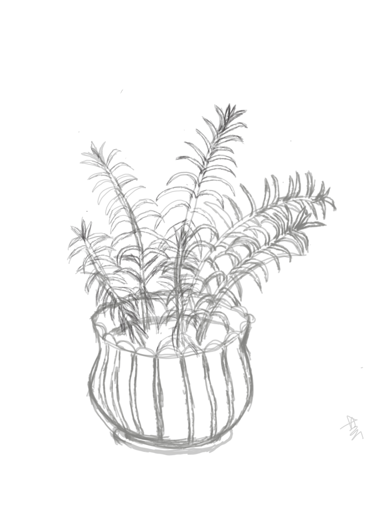
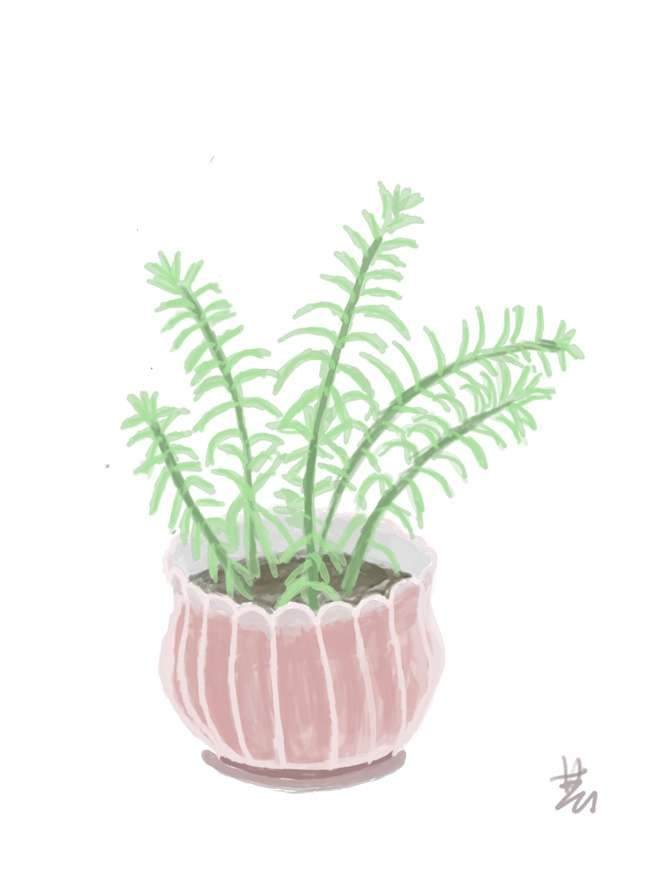

绘盆栽百合花
今天在读行政法和法理学法条的空闲时间，画了家里的我特别喜欢的百合花的线稿并在晚上完成了上色。今天尝试了一下主要是是想试一试刚刚买到的数位板好不好用，目前的感触就是还行，但是延迟和压力感不是特别满意，等着以后换板子。

上图的线稿，有点糊，线条的勾勒主要依靠短小粗糙的细线，这不是追求什么艺术效果而是本人基本功不够。

简单粗糙但节约时间就降低了对于精细度和真实性的要求，就涂成了这么个抽象的东西。